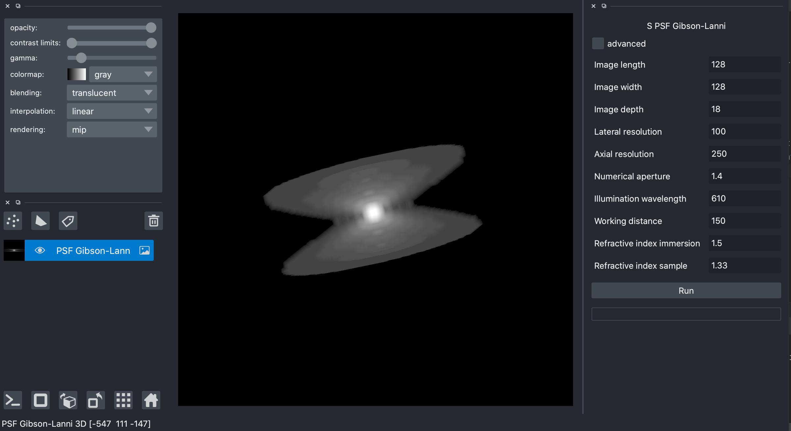
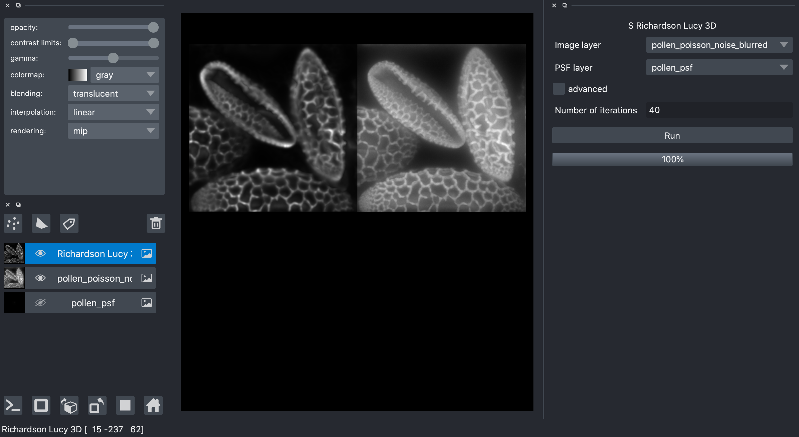
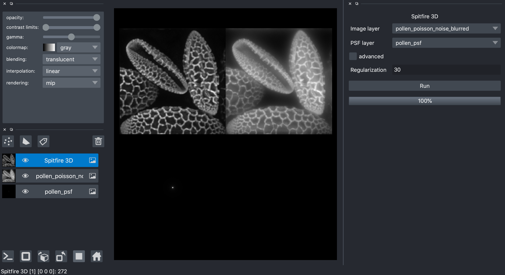

Guide
This page aims at guiding the napari-sdeconv user for scientific image deconvolution. The package contains two types of plugins: PSF generators and deconvolution algorithms.
PSF generators
For 3D image deconvolution, a noise free PSF is needed. In most of the cases it is easier to use a synthetic PSF than denoising a measured PSF. napari-sdeconv provides a plugin called S PSF Gibson-Lanni to generate a synthetic 3D microscope PSF using the Gibson-Lanni model. The different parameters corresponds to the settings of the microscope.
{kind=link}
Deconvolution with Wiener
The deconvolution with the Wiener filter is the fastest deconvolution since it is a direct inverse transform in the Fourrier space. I involve a regularisation to filter the high frequencies in the Fourrier domain. Thus a regularisation parameter called Lambda needs to be set manually to balance the high frequency filter. The Lambda value should be small and vary with the image content and pixels intensities.

Deconvolution with Richardson-Lucy
The Richardson-Lucy deconvolution is one of the most known deconvolution algorithm. It aims at constructing a deblurred image by optimizing the likelihood criterion. Richardson-Lucy is an iterative procedure. It then involve the number of iterations as a parameter that has to be manually set.
{kind=link}
Deconvolution with Spitfire
Spitfire is a variational method for image deconvolution. It particularity is to regularize with two terms to create both a smooth and sparse deblurred image. Spitfire is an iterative procedure. It is then more time consuming than Wiener or Richardson-Lucy, but gives more accurate results thanks to the regularization. Spitfire involve a regularisation parameter called Regularisation needs to be set manually to balance the weight of the regularization term. A good starting value is 12 for 2D images and 30 for 3D images.
{kind=link}